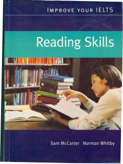

IYIELTS Reading imtihoniga tayyorgarlik ko'rish uchun samarali qo'llanma.
Ushbu qo'llanma IELTS imtihonining Reading (o'qish) bo'limiga tayyorgarlik ko'rayotganlar uchun mo'ljallangan bo'lib, har bir bo'limda maxsus matn tahlili va imtihon topshiriqlarini o'z ichiga oladi. Kitobda skanerlash, skimming, savollarga javob berish va boshqa muhim ko'nikmalarni rivojlantirish uchun amaliy mashqlar keltirilgan. Sam McCarter va Norman Whitby hammuallifligida tayyorlangan ushbu kitob o'quvchilarga imtihonda yuqori ball olishga yordam beradi.